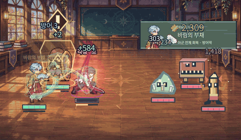

서혁진 · 각성한 참격
대검에서 뻗어나가는 검기, 잔상과 파열까지 새롭게 강화했어요.
보고 싶은 동작을 누르면 해당 구간을 반복 재생해요.

스킬 구간을 불러오고 있어요.
현재 게임에 적용된 모션과 이펙트예요. 각성·궁극기·책임감을 보여주기 위해 발동 조건을 맞춘 시연 전투입니다.
대검에서 뻗어나가는 검기, 잔상과 파열까지 새롭게 강화했어요.
보고 싶은 동작을 누르면 해당 구간을 반복 재생해요.

스킬 구간을 불러오고 있어요.
현재 게임에 적용된 모션과 이펙트예요. 각성·궁극기·책임감을 보여주기 위해 발동 조건을 맞춘 시연 전투입니다.